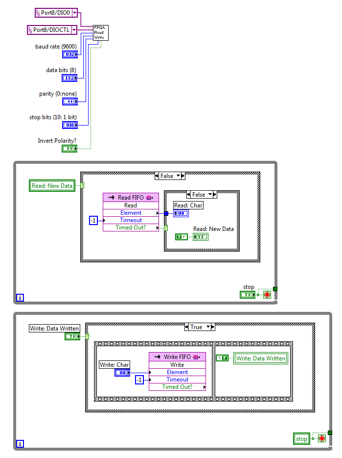

Using LabVIEW FPGA with Digital I/O Lines
For RS-232 Serial Communications
These example VIs implement a simple RS-232 interface using the LabVIEW FPGA Module.
- LabVIEW FPGA 8.6 or later
- LabVIEW FPGA Target with Digital I/O Lines (such as Single-Board RIO, PXI-7831R, or CompactRIO with a Digital I/O C-series Module)
- RS-232 transceiver, used to convert TTL voltage levels to RS-232 levels. (Optional if remote device can use TTL voltage levels directly.)
- Configurable baud rate, number of data bits (5 to 8), parity, stop bits, no hardware flow control
- Works with normal and inverting transceivers
- Includes FPGA VIs for reading/writing one byte at a time through digital lines
- Includes LabVIEW Host (Windows or Real-Time) VIs for reading/writing strings
- Reusable for multiple serial ports on the same device (with minor edits)
- NI-9602 Single-Board RIO
- LabVIEW FPGA 8.6.1
- LabVIEW Real-Time 8.6.1
- LabVIEW for Windows 8.6.1
- Sipex SP213EHCA-L RS-232 Transceiver
You will need to incorporate the included VIs into the LabVIEW Project for your application. You will also need to create two target-scoped FIFOs.

The Host VIs shown below are the main API for using the serial port from the host controller. (On a cRIO or sbRIO target, this is the LabVIEW Real-Time controller.) The Example VI for the host shows how to use these VIs to send a command to an instrument and receive a response.

Since LabVIEW FPGA can have only one top-level VI, you must incorporate the contents of the "FPGA Main.vi" into your top-level FPGA VI. The "FPGA Main.vi" block diagram consists of one subVI call, and two parallel loops for interacting with the FIFOs. You must change the constants for the Transmit and Receive ports to match your system. If you are using an inverting transceiver (where the TTL and RS-232 signals are inverted from each other), pass a TRUE value for the "Invert Polarity?" input.

The FIFOs are also configured in the project. They are Target-Scoped FIFOs of type U8.

- If you want to use multiple DIO lines to communicate with multiple serial ports, you must duplicate the contents of the top-level FPGA VI and the LV FPGA Serial Read Write.vi. You must select different DIO constants for each serial port you want to create. You also must create a new pair of FIFOs, and modify both the top-level FPGA VI, and the copies of the LV FPGA Serial Read Write.vi to use these FIFOs.
- On the host side, the LVRT Serial Write.vi uses a loop as it waits for each byte to be consumed by the FPGA. This loop will run as fast as it possibly can, and consequently use up CPU time while this occurs. For some applications, you may prefer to put a Wait function inside this loop, so that it will use less CPU time (at the expense of slower serial writes). Similarly, the LVRT Serial Read.vi includes a 1 millisecond wait as it read serial data. For some applications, you may prefer to remove this Wait, so that the serial data can be read faster.
- These VIs assume that the FPGA clock rate is 40 MHz. If you are using a different FPGA clock rate, you can modify the LV FPGA Serial Read Write.vi, and wire a different value to the LV FPGA Serial Calc Timing Values.vi.
Copyright © 2009 National Instruments Corp.